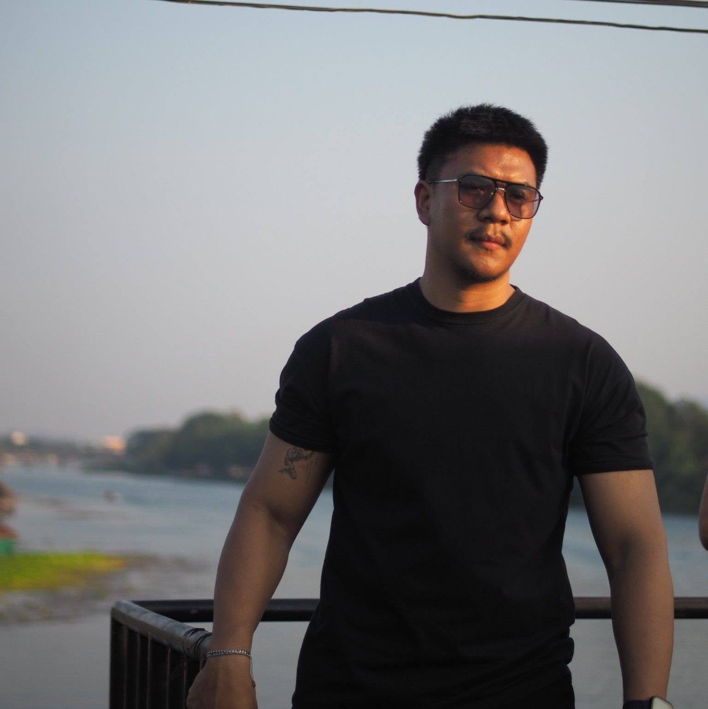

Phichaya Mongkol

Summary
- Junior Web Developer ที่มีพื้นฐานพัฒนาเว็บไซต์อย่างครบวงจร (HTML, CSS, JavasSript)
Education
- จบการศึกษาระดับชั้นปริญญาตรีที่มหาลัยธนบุรี
Work Experience
Skill
- สามารถใช้งานโปรเเกรมสำเร็จรูปได้อย่างเต็มประสิทธิภาพ
- ติดต่อประสานงานกับผู้อื่นได้อย่างมีประสิทธิภาพ
Award and Certificate
Other
Phichaya.All rights reserved.